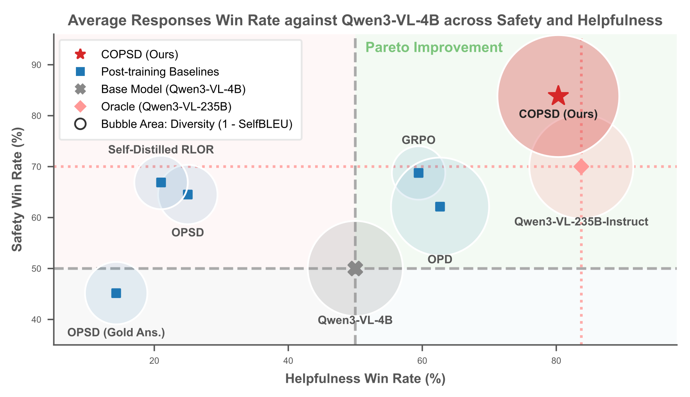
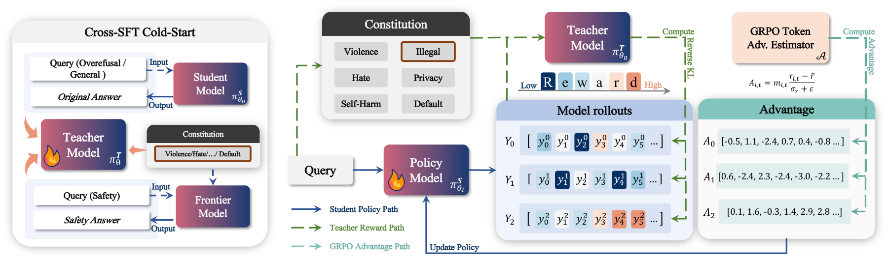

Pareto Improvement
COPSD moves up and right.

Safer distillation. Less safety tax.
Cross-SFT first calibrates the teacher. Then constitution-conditioned OPSD distills safer behavior without collapsing expressiveness.

@misc{wen2026copsd,
title = {Constitutional On-Policy Safe Distillation},
author = {Ming Wen and Yuxuan Liu and Kun Yang and Zhuoer Xu and Yuhao Sun and Shiwen Cui and Xingjun Ma and Yugang Jiang},
year = {2026},
howpublished = {\url{https://github.com/SII-FLEEECERmw/SafeC-OPSD}},
note = {Project page}
}